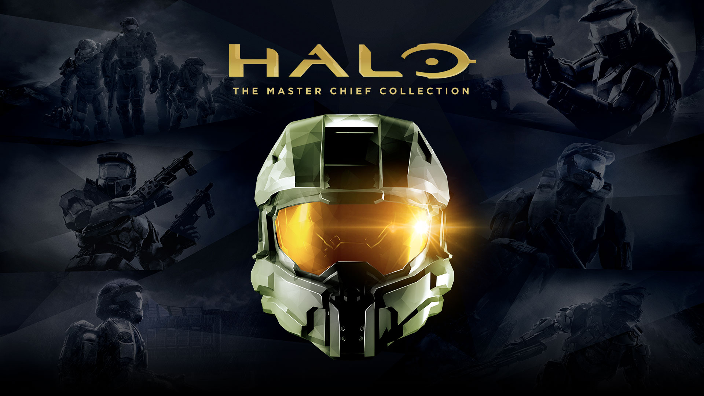

Official Xbox Website
Official Xbox Website
Gears of War is a video game franchise created by Epic Games, developed and managed by The Coalition, and owned and published by Xbox Game Studios. The series focuses on the conflict between humanity, the subterranean reptilian hominids known as the Locust Horde, and their mutated counterparts, the Lambent. The franchise consists of six third-person shooter video games, which has been supplemented by a comic book series and five novels.
Halo is an American, military science-fiction media franchise managed and developed by 343 Industries(A company), and published by Xbox Game Studios. The franchise and its early main installments were originally developed by Bungie
Forza is a series of simulation racing video games for Xbox consoles, Windows 10, iOS and Android devices published by Xbox Game Studios. The series seeks to emulate the performance and handling characteristics of many real-life production, modified and racing cars.
Minecraft is a sandbox video game developed by Mojang Studios. Created by Markus "Notch" Persson in the Java programming language and released as a public alpha for personal computers in 2009, the game was officially released in November 2011, with Jens Bergensten taking over development around then.
Sea of Thieves is a 2018 action-adventure game developed by Rare and published by Xbox Game Studios. The player assumes the role of a pirate who completes voyages from different trading companies in order to become the ultimate pirate legend.